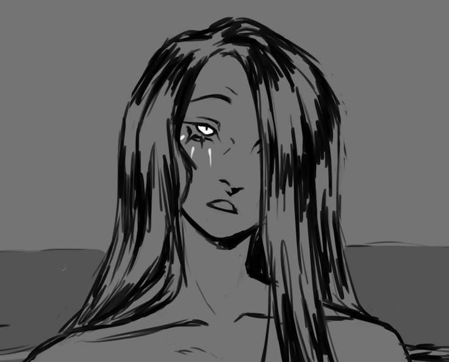

Cila é uma criatura marinha aterrorizante que habita um estreito perigoso do mar, sendo uma das ameaças mais temidas da jornada. Metade monstro, metade lenda, ela representa um perigo inevitável que coloca todos à prova.
Enfrentar seu território exige decisões extremamente difíceis, revelando o lado mais cruel da viagem de Odisseu. Sua presença mostra que nem todos os desafios podem ser evitados, apenas enfrentados da melhor forma possível.